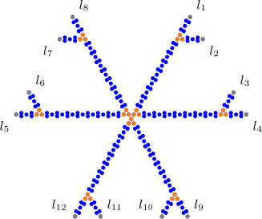
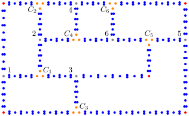
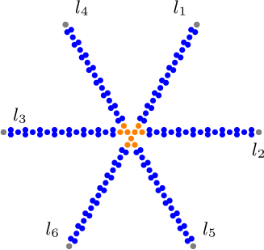
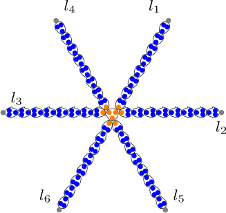

Popularity on Variations of Multidimensional Roommate Games

Steven Ge
Supervisor: Toshiya Itoh
Institute of Science Tokyo
Department of Mathematical and Computing Science
Department of Mathematical and Computing Science
Content
-
Preliminaries
- Multidimensional Roommates Problem (MRP)
- Equilibrium Concepts
- Core Stability
- Popularity
- Complexity of Popularity
- Variations of Multidimensional Roommates Problem
-
Roommate Diversity Problem
- Room size 2
- Strict Popularity
- Our Sesult Summary
-
3D-Euclidean Stable Roommates
- Strict Popularity
-
Future Work
Multidimensional Roommates Problem (MRP)$^{\text{[1]}}$
Andecdote
- Dormitory
- Students
- Rooms require exactly $s$ students
- $s=3$
- Each student $s$ ranks the others in order of preference $\succsim_s$
- E.g. $\{a,b,c\} \succ_a \{h,e,a\}$
Problem Statement
- Set of agents $N$
- Room size $s$
- $s=3$
- Each student ranks the others in order of preference
- $(\succsim_a)_{a\in N}$
- Game $G = (N, s, (\succsim_a)_{a\in N})$
Equilibrium Concepts
Core Stability$^{\text{[2]}}$
- Outcome
- $\pi$
- Blocking Room $R$
- $\{c,g,k\} \succ_k \{k,j,i\}$
- $\{c,g,k\} \succ_g \{g,h,l\}$
- $\{c,g,k\} \succ_c \{a,b,c\}$
- No blocking room $R$$\iff$$\pi$ is core stable
- Fair?
Equilibrium Concepts
Popularity$^{\text{[3]}}$
- Outcomes
- $\pi$
- $\pi'$
- $\pi$ is more popular than $\pi'$
- (Strictly) More $\vee$ than $\wedge$
- $\pi$ is popular
- No other outcome $\pi'$ is more popular than $\pi$
- $\pi$ is strictly popular
- $\pi$ is more popular than any other outcome $\pi'$
- $p$ is mixed popular
- $p$ is a probability distribution over all possible outcomes
- $p$ is expected to be more popular than any other probability distribution $q$
- $E_p[\Pi] \geq E_q[\Pi]$
Complexity of Popularity$^{\text{[4,5,6]}}$
- Popularity on Multidimensional Roommates Problem
- NP-hard
- Even with room size $s=2$
- Even when preferences $(\succsim_a)_{a \in N}$ are strict
Variations of Multidimensional Roommates Problem
Restrict preferences $(\succsim_a)_{a \in N}$
Roommate Diversity Problem$^{[7]}$
| Equilibrium Concept | Complexity Class, Room Size = 2 |
Complexity Class, Room Size > 2 |
Parameterized Complexity Class (parameter: room size) |
|
Core Stability |
P |
NP-Complete$^{**}$ |
FPT |
|
Exchange Stability |
p |
NP-complete |
FPT |
|
Pareto Optimality |
P |
P$^*$ |
- |
|
Envy-Free |
? |
NP-complete |
FPT |
$^*$Search problem is NP-Hard for Room Size > 2.
$^{**}$P if preferences are dichotomous.
Restrict preferences $(\succsim_a)_{a \in N}$
3D-Euclidean Stable Roommates Problem$^{[8]}$
- 2D-Euclidean Stable Roommates Problem
- Core Stability
- Room Size $s \geq 3$,
- NP-Complete
Popularity on the Roommate Diversity Problem
Roommate Diversity Problem$^{\text{[7,9]}}$
Andecdote
- International class
- Japanese students
- International students
- Groups of constant size $s$
- $s=3$
- Preference only depends on $\frac{\#\text{Japanese students in group}}{s}$
- $k$ does not speak nor wants to practice English
- $1 \succ$$_k$ $\frac{2}{3}$ $\succ$$_k$ $\frac{1}{3}$
- $a$ does not speak, but wants to practice Japanese
- $\frac{1}{3}$ $\succ$$_a$ $\frac{2}{3}$ $\sim$$_a$ $0$
- $k$ does not speak nor wants to practice English
Problem Statement
- Agents
- Set of Red Agents $R$
- Set of Blue Agents $B$
- Room size $s$
- $s=3$
- Preference only depends on $\frac{\#\text{red agents in room}}{s}$
- $a \in \color{red}{R} \color{black}\cup \color{blue}{B}$
- $\succsim_{a}$ Complete transitive weak order over $D = \{\frac{j}{s}| j \in [0,s]\}$
- Game $G = (\color{red}R\color{black},\color{blue}B\color{black},s, (\succsim_a)_{a \in \color{red}R\color{black}\cup\color{blue}B\color{black}})$
Dichotomous Preferences
- Agents
- Set of Red Agents $R$
- Set of Blue Agents $B$
- Room size $s$
- $s=3$
- Preference only depends on $\frac{\#\text{red agents in room}}{s}$
- $a \in \color{red}{R} \color{black}\cup \color{blue}{B}$
- $\succsim_{a}$ Complete transitive weak order over $D = \{\frac{j}{s}| j \in [0,s]\}$
- Game $G = (\color{red}R\color{black},\color{blue}B\color{black},s, (\succsim_a)_{a \in \color{red}R\color{black}\cup\color{blue}B\color{black}})$
- Preference of agent $a \in \color{red}{R} \color{black}\cup \color{blue}{B}$ is dichotomous
-
$D$ can be partitioned into $D_a^+$ and $D_a^-$
- $a$ ''likes'' the fractions in $D_a^+$ equally
- $a$ ''hates'' the fractions in $D_a^-$ equally
-
E.g. $\frac{1}{3}$ $\succ$$_a$ $\frac{2}{3}$ $\sim$$_a$ $0$
- $D^+_{\color{blue}a}$$=\{\frac{1}{3}\}$
- $D^-_{\color{blue}a}$$=\{\frac{2}{3}, 0\}$
-
$D$ can be partitioned into $D_a^+$ and $D_a^-$
Room Size 2
Theorem: Popular outcome $\pi$ can be computed in polynomial time
- Game $G = (\color{red}R\color{black},\color{blue}B\color{black},2, (\succsim_a)_{a \in \color{red}R\color{black}\cup\color{blue}B\color{black}})$
- $s=2$
- 3 possible preference types
- Prefers to be paired with OWN color
- Prefers to be paired with OTHER color
- Indifferent
- Weighted complete graph $G' = (\color{red}R\color{black}\cup\color{blue}B\color{black}, E, w)$
- $w(x,y) = \begin{cases} ~\\ ~ \\ ~ \\ \end{cases}$
- E.g. $\{\color{blue}a\color{black},\color{blue}b\color{black}\}$
- $0 \succ_{\color{blue}a} \frac{1}{2}$
- $0 \prec_{\color{blue}b} \frac{1}{2}$
- $0 \succ_{\color{blue}a} \frac{1}{2}$
- $0 \sim_{\color{blue}b} \frac{1}{2}$
$\}$$\Rightarrow w(\color{blue}a\color{black},\color{blue}b\color{black}) = 1$
$\}$$\Rightarrow w(\color{blue}a\color{black},\color{blue}b\color{black}) = 2$
$\small 2~~~~ \{x,y\} \text{ liked by both } x \mathbf{\text{ AND }} y$
$\small 1~~~~ \{x,y\} \text{ liked by } x \mathbf{\text{ XOR }} y$
$\small 0~~~~ \{x,y\} \text{ disliked by both } x \mathbf{\text{ AND }} y$
- Maximum weight perfect matching $M$ of $G'$ is popular!
- $M$ can be found in polynomial time$^{[10]}$ $\Box$
Theorem: Popular outcome $\pi$ can be computed in polynomial time
- Popularity on Stable Roommates Problem
- No restrictions on preferences
- room size 2
- NP-hard
Strict Popularity
Theorem: Strict popularity with room size $\geq$ 3 is co-NP-hard
Exact Cover by 3-Sets Problem$^{\text{[3]}}$
-
Exact 3-set Cover (X3C)
-
Universe $X = \{1, \dots, m\}$
-
3-sets $\mathcal{C} = \{C_1, \dots, C_q\}$
-
$C_i \subseteq X$
-
$|C_i| = 3$
-
Does there exist a set $S \subseteq \mathcal{C}$ of 3-sets that partitions $X$?
-
E.g. {$C_1$, $C_2$, $C_4$} is NOT a solution.
-
E.g. {$C_1$, $C_6$} IS a solution.
-
X3C instance $I = (X,\mathcal{C})$.
-
Exact 3-set Cover problem is NP-complete
$X = \{1,2,3,4,5,6\}$
$\mathcal{C} = \left\{\begin{array}{l}
~ \\
~ \\
~ \\
~ \\
~ \\
\end{array}
\right.$
- $C_1 = \{1,2,3\}$
- $C_2 = \{1,2,4\}$
- $C_3 = \{1,3,5\}$
- $C_4 = \{2,4,6\}$
- $C_5 = \{3,5,6\}$
- $C_6 = \{4,5,6\}$
$\left.\begin{array}{l}
~ \\
~ \\
~ \\
~ \\
~ \\
\end{array}
\right\}$
-
Exact 3-set Cover (X3C)
- Universe $X = \{1, \dots, m\}$
- 3-sets $\mathcal{C} = \{C_1, \dots, C_q\}$
- $C_i \subseteq X$
- $|C_i| = 3$
- Does there exist a set $S \subseteq \mathcal{C}$ of 3-sets that partitions $X$?
- E.g. {$C_1$, $C_2$, $C_4$} is NOT a solution.
- E.g. {$C_1$, $C_6$} IS a solution.
- X3C instance $I = (X,\mathcal{C})$.
- Exact 3-set Cover problem is NP-complete
$X = \{1,2,3,4,5,6\}$
$\mathcal{C} = \left\{\begin{array}{l}
~ \\
~ \\
~ \\
~ \\
~ \\
\end{array}
\right.$
- $C_1 = \{1,2,3\}$
- $C_2 = \{1,2,4\}$
- $C_3 = \{1,3,5\}$
- $C_4 = \{2,4,6\}$
- $C_5 = \{3,5,6\}$
- $C_6 = \{4,5,6\}$
$\left.\begin{array}{l}
~ \\
~ \\
~ \\
~ \\
~ \\
\end{array}
\right\}$
Strict Popularity
Theorem: Strict popularity with room size $\geq$ 3 is co-NP-hard
Reduction
X3C Instance $I = (X, \mathcal{C})$
- $\small X = \{1,2,3,4,5,6\}$
- $\small \mathcal{C} = \{\{1,2,3\}, \{2,3,4\}, \{4,5,6\}\} = \{C_1,C_2,C_3\}$
Roommate Diversity Game $G = (\color{red}R\color{black},\color{blue}B\color{black},s,(\succsim_a)_{a\in \color{red}R\color{black}\cup\color{blue}B\color{black}})$
- Set $s = 5(q + 1) + 1 + m$
- For each $i \in X$, create red set agent $\color{red}r_i$
- For each $C_j \in \mathcal{C}$, create the sets of agents:
- Red Redundant Agents $R_j^{red} = \{r_j^1, \dots, r_j^{5j-2}\}$
- Blue Filling Agents $B_j^{fill} = \{b_j^1, \dots, b_j^{s-(5j-2)-3}\}$
- Blue Additional Agents $B_j^{add} = \{\tilde{b}_j^1, \tilde{b}_j^2, \tilde{b}_j^3\}$
- Blue Evening Agents $B^{even}$
- Red Monolithic Agents $R^{mon} = \{r_{mon}^1, \dots, r_{mon}^{5(q+1)+1}\}$
- Blue Monolithic Agents $B^{mon}= \{b_{mon}^1, \dots, b_{mon}^{s-5(q+1)-1}\}$
- An agent $a$ has dichotomous preferences
- Monolithic Outcome $\pi_{mon}$
- Unique
- Exists regardless of $I$ having a solution
- Each agent $a$ in a room with fraction in $D_a^+$
- Reduced Outcome $\pi_{S}$
- $S \subseteq \mathcal{C}$ is a solution of $I$
- Exists if and only if $I$ has a solution
- Each agent $a$ in a room with fraction in $D_a^+$
- $\pi_{mon}$ and $\pi_S$ are more popular than any other outcome of $G$
- $I$ has no solution$\iff$$G$ has a strictly popular outcome $\Box$
$\pi_{mon}$
$\pi_S$, where $S = \{C_1,C_3\}$
X3C Instance $I = (X, \mathcal{C})$
- $\small X = \{1,2,3,4,5,6\}$
- $\small \mathcal{C} = \{\{1,2,3\}, \{2,3,4\}, \{4,5,6\}\} = \{C_1,C_2,C_3\}$
- Set $s = 5(q + 1) + 1 + m$
- For each $i \in X$, create red set agent $\color{red}r_i$
- For each $C_j \in \mathcal{C}$, create the sets of agents:
- Red Redundant Agents $R_j^{red} = \{r_j^1, \dots, r_j^{5j-2}\}$
- Blue Filling Agents $B_j^{fill} = \{b_j^1, \dots, b_j^{s-(5j-2)-3}\}$
- Blue Additional Agents $B_j^{add} = \{\tilde{b}_j^1, \tilde{b}_j^2, \tilde{b}_j^3\}$
- Blue Evening Agents $B^{even}$
- Red Monolithic Agents $R^{mon} = \{r_{mon}^1, \dots, r_{mon}^{5(q+1)+1}\}$
- Blue Monolithic Agents $B^{mon}= \{b_{mon}^1, \dots, b_{mon}^{s-5(q+1)-1}\}$
- An agent $a$ has dichotomous preferences
- Monolithic Outcome $\pi_{mon}$
- Unique
- Exists regardless of $I$ having a solution
- Each agent $a$ in a room with fraction in $D_a^+$
- Reduced Outcome $\pi_{S}$
- $S \subseteq \mathcal{C}$ is a solution of $I$
- Exists if and only if $I$ has a solution
- Each agent $a$ in a room with fraction in $D_a^+$
- $\pi_{mon}$ and $\pi_S$ are more popular than any other outcome of $G$
- $I$ has no solution$\iff$$G$ has a strictly popular outcome $\Box$
$\pi_{mon}$
Our Results Summary
| Setting | Room size | Preferences | Results | Dissertation | Future Work |
|---|---|---|---|---|---|
| Popularity | $2$ | Unrestricted |
|
Section 3.1 | |
| Strict Popularity | $\geq 3$ | Dichotomous preferences |
|
Section 3.2 |
|
| Mixed Popularity | $\geq 3$ | Dichotomous preferences |
|
Section 3.3 |
|
| Popularity | $\geq 3$ | Trichotomous preferences |
|
Section 3.4 |
|
| Setting | Room size | Preferences | Results | Dissertation | Future Work |
|---|---|---|---|---|---|
| Popularity | $2$ | Unrestricted |
|
Section 3.1 | |
| Strict Popularity | $\geq 3$ | Dichotomous preferences |
|
Section 3.2 |
|
| Mixed Popularity | $\geq 3$ | Dichotomous preferences |
|
Section 3.3 |
|
| Popularity | $\geq 3$ | Trichotomous preferences |
|
Section 3.4 |
|
Popularity on the 3D-Euclidean Stable Roommates
Popularity on the 3D-Euclidean Stable Roommates$^{\text{[8,11]}}$
Andecdote
- Drones
- Coordinates in 3D Space
- Groups of constant size $s$
- $s=3$
- Consider drone h
- Preference only depends on:
Sum of distances to group members- The smaller the sum, the better
Problem Statement
- Agents $N$
- Embedding $E: N \rightarrow \mathbb{R}^3$
- Room size $s \in \mathbb{N}$
- $s=3$
- Preference of $a \in N$ only depends on:
- Sum of distances to room members in $S$
- $S \succsim_{a} S' \iff \delta(a, S) \leq \delta(a, S')$
- Game $G = (N, s, E)$
Strict Popularity
Theorem: strict popularity with room size 3 is co-NP-hard
Strict Popularity
Theorem: strict popularity with room size 3 is co-NP-hard
Planar and Cubic Exact Cover by 3-Sets Problem$^{\text{[3]}}$
-
Exact 3-set Cover (PC-X3C)
- Universe $X = \{1, \dots, m\}$
- 3-sets $\mathcal{C} = \{C_1, \dots, C_q\}$
- $C_i \subseteq X$
- $|C_i| = 3$
- Does there exist a set $S \subseteq \mathcal{C}$ of 3-sets that partitions $X$?
- E.g. {$C_1$, $C_2$, $C_4$} is NOT a solution.
- E.g. {$C_1$, $C_6$} IS a solution.
- Planar and Cubic
-
Cubic
- Each element in $X$ is contained in exactly three 3-sets of $\mathcal{C}$.
-
Planar
- Corresponding graph is planar.
- PC-X3C instance $I = (X,\mathcal{C})$.
- Planar and Cubic Exact 3-set Cover problem is NP-complete
$X = \{1,2,3,4,5,6\}$
$\mathcal{C} = \left\{\begin{array}{l}
~ \\
~ \\
~ \\
~ \\
~ \\
\end{array}
\right.$
- $C_1 = \{1,2,3\}$
- $C_2 = \{1,2,4\}$
- $C_3 = \{1,3,5\}$
- $C_4 = \{2,4,6\}$
- $C_5 = \{3,5,6\}$
- $C_6 = \{4,5,6\}$
$\left.\begin{array}{l}
~ \\
~ \\
~ \\
~ \\
~ \\
\end{array}
\right\}$
Strict Popularity
Theorem: strict popularity with room size 3 is co-NP-hard
3 Layers
- Bottom Layer
- Top Layer
- Ascending Layer
Theorem: strict popularity with room size 3 is co-NP-hard
Bottom Layer
Theorem: strict popularity with room size 3 is co-NP-hard
Top Layer

Theorem: strict popularity with room size 3 is co-NP-hard
Ascending Layer
- Purpose: The ascending layer connects the bottom layer with the top layer
- $\small X = \{1,2,3,4,5,6\}$
- $\small \mathcal{C} = \{\{1,2,3\}, \{1,2,4\}, \{1,3,5\}, \{2,4,6\}, \{3,5,6\}, \{4,5,6\}\}$$\small ~~~= \{C_1,C_2,C_3,C_4,C_5,C_6\}$
Bottom Layer

Ascending Layer
Top Layer

Theorem: strict popularity with room size 3 is co-NP-hard
Permanent popular outcome $\pi_{pp}$
- For permanent popular outcome $\pi_{pp}$ we have
Solution $S = \{C_1, C_6\}$
Bottom Layer
Ascending Layer
Top Layer


Theorem: strict popularity with room size 3 is co-NP-hard
Reduced outcome $\pi_{S}$
- For reduced outcome $\pi_{S}$ we have
- For each vertex $v$, $\delta(v, \pi(v))$ is minimized
- Exactly one per solution $S$ of PC-X3C instance $I$ exists.
Solution $S = \{C_1, C_6\}$
Bottom Layer
Ascending Layer
Top Layer

Theorem: strict popularity with room size 3 is co-NP-hard
PC-X3C instance $I$ has no solution$\iff$$G$ has a strictly popular outcome $\Box$
Future Work
Popularity on the Roommate Diversity Problem
| Setting | Room size | Preferences | Results | Dissertation | Future Work |
|---|---|---|---|---|---|
| Popularity | $2$ | Unrestricted |
|
Section 3.1 | |
| Strict Popularity | $\geq 3$ | Dichotomous preferences |
|
Section 3.2 |
|
| Mixed Popularity | $\geq 3$ | Dichotomous preferences |
|
Section 3.3 |
|
| Popularity | $\geq 3$ | Trichotomous preferences |
|
Section 3.4 |
|
Future Work
Popularity on 3D-Euclidean Stable Roommates
- Room size 2
- Room size $>$ 3
- Mixed Popularity
- Popularity
Bibliography
| [1] | Knuth, D. E. (1976). Mariages stables et leurs relations avec d'autres problmes combinatoires: introduction l'analyse mathmatique des algorithmes. (No Title). |
| [2] | Gale, D., & Shapley, L. S. (1962). College admissions and the stability of marriage. The American Mathematical Monthly, 69(1), 9-15. |
| [3] | Grdenfors, P.: Match making: Assignments based on bilateral preferences. Systems Research and Behavioral Science 20, 166173 (1975). https://doi.org/10.1002/bs.3830200304, https://onlinelibrary.wiley.com/doi/10.1002/bs.3830200304 |
| [4] | Cseh, ., & Kavitha, T. (2021). Popular matchings in complete graphs. Algorithmica, 83(5), 1493-1523. |
| [5] | Faenza, Y., Kavitha, T., Powers, V., & Zhang, X. (2019). Popular matchings and limits to tractability. In Proceedings of the Thirtieth Annual ACM-SIAM Symposium on Discrete Algorithms (pp. 2790-2809). Society for Industrial and Applied Mathematics. |
| [6] | Gupta, S., Misra, P., Saurabh, S., & Zehavi, M. (2021). Popular matching in roommates setting is NP-hard. ACM Transactions on Computation Theory (TOCT), 13(2), 1-20. |
| [7] | Boehmer, N., Elkind, E.: Stable Roommate Problem with Diversity Preferences. In: Proceedings of the Twenty-Ninth International Joint Conference on Artificial Intelligence. IJCAI20 (2021). https://doi.org/10.24963/ijcai.2020/14 |
| [8] | Chen, J., & Roy, S. (2021). Multi-dimensional stable roommates in 2-dimensional Euclidean space. arXiv preprint arXiv:2108.03868. |
| [9] | Bredereck, R., Elkind, E., & Igarashi, A. (2019). Hedonic diversity games. arXiv preprint arXiv:1903.00303. |
| [10] | Duan, R., Pettie, S., & Su, H. H. (2018). Scaling algorithms for weighted matching in general graphs. ACM Transactions on Algorithms (TALG), 14(1), 1-35. |
| [11] | Arkin, E. M., Bae, S. W., Efrat, A., Okamoto, K., Mitchell, J. S., & Polishchuk, V. (2009). Geometric stable roommates. Information Processing Letters, 109(4), 219-224. |
| [12] | Di Battista, G., Liotta, G., & Vargiu, F. (1998). Spirality and optimal orthogonal drawings. SIAM Journal on Computing, 27(6), 1764-1811. |